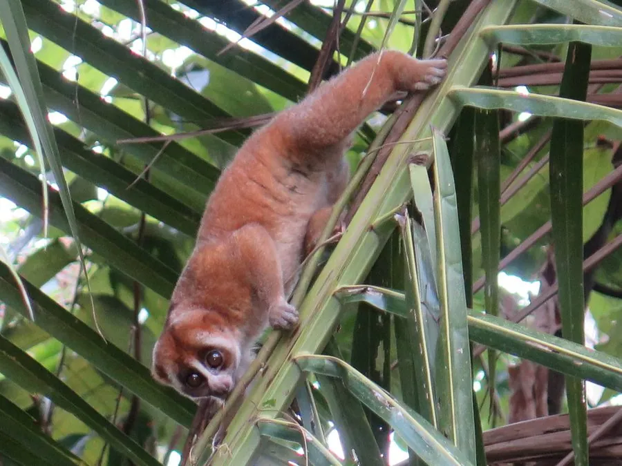

哺乳动物 · 动物界
蜂猴 Nycticebus coucang

东南亚与云南雨林中的慢动作灵长类，眼睛巨大、动作迟缓，肘部有毒性腺体，是少数带毒的灵长类之一。
- 分类
- 门脊索动物门纲哺乳纲目灵长目科懒猴科属蜂猴属
- 栖息环境
- 热带雨林与季雨林，树栖夜行
- 地理分布
- 中国云南南部及东南亚的缅甸、泰国、马来半岛、苏门答腊、婆罗洲
- 保护级别
- IUCN 易危（VU）；中国国家一级保护动物
物种志
蜂猴体长 0.25–0.38 米，体重 0.6–1.5 kg，体形圆胖。它的被毛为灰褐至黄褐色，背部有一条深色纵纹，眼睛巨大而圆，耳朵小；四肢短粗，手掌和脚掌有强壮的抓握力，动作非常缓慢，常蜷缩成球状。
蜂猴分布于东南亚的雨林和季雨林，从中国云南南部、缅甸、泰国到马来半岛、苏门答腊和婆罗洲，是典型的夜行树栖灵长类。它以果实、树胶、花蜜、昆虫和小型脊椎动物为食，多在树冠和藤蔓间缓慢移动，白天蜷在树洞或枝条上休息。蜂猴肘部有分泌毒素的腺体，会舔舐毒素涂抹在牙齿上，被咬时可能引起过敏和疼痛，是少数有毒的灵长类。雌性妊娠期约 190 天，每胎 1–2 仔。因宠物贸易和传统药材捕猎，蜂猴数量下降，被列为易危，中国将其列为国家一级保护动物。
形态与习性
- 食性果实、树胶、花蜜、昆虫与小型脊椎动物
- 体长0.25–0.38 m
- 体重0.6–1.5 kg
- 寿命约 20 年
- 繁殖妊娠期约 190 天，每胎 1–2 仔
- 活动节律夜行，白天蜷在树洞或枝条上休息
- 毒性肘部腺体分泌毒素，涂抹在牙齿上
趣味知识
- 蜂猴肘部有毒性腺体，会把毒素涂在牙齿上自卫。
- 它动作极其缓慢，常蜷缩成球状挂在树枝上。
- 蜂猴的眼睛巨大，适合在夜间微弱光线下活动。
- 因宠物贸易和药材捕猎，中国将蜂猴列为国家一级保护动物。